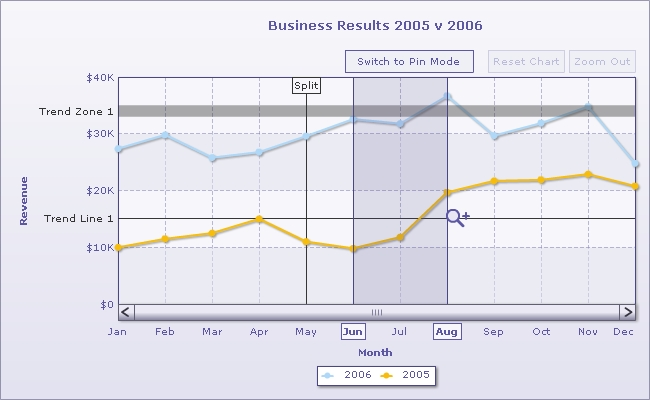

| Zoom Line Chart XML |
The Zoom Line chart is essentially a multi-series line chart with intuitive zooming, scrolling and pinning capabilities. It can handle large datasets (comprising of tens of thousands of data points) easily. Shown below is an example of a Zoom Line chart: |
|  |
Zoom Line Chart can accept XML data in two formats:
Since the standard Multi-series XML format has already been discussed, we will skip that and just show the compact format. Shown below is the structure of the compact XML format: |
<chart compactDataMode="1" dataSeparator="|" caption="Business Results 2005 v 2006" xaxisname="Month" yaxisname="Revenue" showvalues="0" numberprefix="$" paletteThemeColor='5D57A5' divLineColor='5D57A5' divLineAlpha='40' vDivLineAlpha='40'> |
When specifying data in compact mode, you will necessarily need to specify following two attributes:
The Zoom Line chart supports horizontal trend lines, which can be defined in the same way as they are defined in multi-series charts. Vertical trendlines, based on data index, are also supported. Vertical trendlines can be displayed conditionally based on level of zoom the chart is viewed at. Consider the XML below: <line startIndex='5' displayAlways='1' displayValue='Split' valueOnTop='1'/> The above vertical trendline has an attribute displayAlways='1' which instructs the chart to show the vertical trendline at all times, irrespective of the level of zoom applied to the chart. Also, the position of trend line is specified as indexes (startIndex and endIndex). Index refers to the order of precedence of data points - from left to right on the x-axis (<category>). For instance, the first x-axis label has an index of 1. Here is the XML code for another vertical trendline: <line index='30' displayAlways='0' displayWhenCount='20' displayValue='Dividend' dashed='1' showOnTop='1' color='FF5904' thickness='2' dashLen='3' dashGap='3' /> This line has an additional attribute displayWhenCount='20' which instructs the chart to show the trend-line only when user has zoomed into the chart such that 20 or lesser number of dataplots are visible on a single screen. |
| Features not supported in Zoom Line Chart |
Since the zoom line chart plots very large datasets, certain features and attributes which are available in most of the charts of FusionCharts XT Suite are not supported in zoom line chart. These are:
|